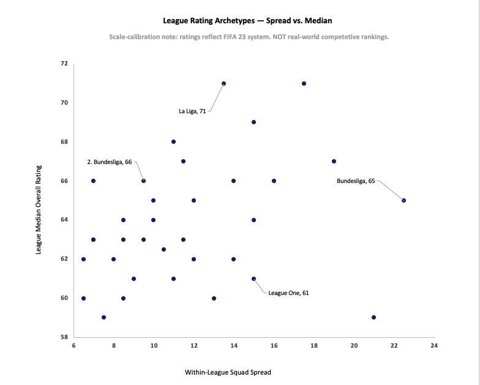
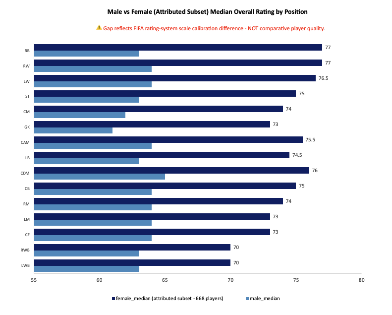

How does football talent actually distribute across leagues, clubs, and positions — and what does that mean for how you read FIFA's rating system? This project builds the answer from the data up, with explicit limits on what the evidence can and cannot support.
The business question sounds simple: how is football talent distributed across leagues, clubs, and positions? The hard part is that the only available data is FIFA's own rating system — a game-derived proxy that reflects EA Sports' internal modeling decisions, not real-world player performance or market value. That constraint shapes everything. It determines which questions the data can answer, which it can't, and how carefully findings have to be framed before they're useful to anyone.
This project analyzes 3.48 million male player-snapshot records and a 668-player female attributed subset from FIFA 23, using a SQL-first pipeline with pre-committed cross-validation thresholds on every finding. Two structural claims are confirmed. Four recommendations follow from them. Four more were explicitly refused because the evidence doesn't support them — including the most tempting one, which would have turned a descriptive rating pattern into a real-world scouting recommendation.
The result is two confirmed structural findings, four refused recommendations, and a pipeline that makes every number traceable to its source. The analysis is bounded to what the rating system can describe — and disciplined about where that boundary sits.
Each claim below was confirmed against a primary query and at least one independent cross-validation before being included. High confidence means the finding holds across multiple snapshot scopes and query strategies. The two findings here are the only ones the evidence supports — anything beyond them is documented in the refused recommendations.
League talent distribution in FIFA 23 isn't one-dimensional. Median overall rating and within-league club spread vary independently — and those two axes together reveal two distinct structural patterns. Depth-based leagues like La Liga sit in the upper-left: high median talent, low spread between top and bottom clubs. Elite-concentration leagues like Bundesliga sit in the lower-right: moderate aggregate talent, but a 22.5-point gap separating the strongest clubs from the weakest. Bundesliga ranks 12th by median but 1st by within-league spread. La Liga ranks 2nd by median but 11th by spread. The archetype distinction isn't subjective — it's what you get when you stop treating talent concentration as a single axis.
Female player ratings exceed male ratings at all 15 positions without exception, with gaps ranging from 7 to 14 points. That gap doesn't reverse at any position, can't be explained by male positional variation (which spans only 4 points total), and is structurally consistent across both the reference snapshot and the full female dataset. What it reflects is a scale calibration difference between FIFA's male and female rating systems — two populations benchmarked against different internal reference points, producing numbers that look comparable but aren't. This is not a finding about comparative player quality. It's a finding about how FIFA's rating system is built.
Four recommendations follow directly from the two confirmed claims. Each is scoped to stakeholders who work within the FIFA rating system domain — not to real-world football operations, which the data cannot support.
Four recommendations were considered and explicitly declined. Each represents a plausible extension of the confirmed findings — the kind of leap a stakeholder might reasonably request. All four were refused because the data structurally cannot support them. The refusals are documented with the same specificity as the recommendations because knowing where the evidence ends is as important as knowing what it shows.
FIFA's rating system has structure — but not the structure most people assume. League talent isn't a single ranking. The two-dimensional archetype framework here is more honest than any tier list. And the cross-population gap isn't about player quality — it's about how two separate rating systems relate to each other. Both findings only make sense if you hold the boundary between what the data describes and what it can't explain.
Two visuals approved and built — each declared in the EDA Findings block before construction began. Two candidate visuals were formally declined: the Q1 baseline distribution histogram (the archetype finding communicates the structural claim more directly) and a standalone within-league spread ranking (the scatter already shows spread as an independent axis; a ranked bar adds a different view of the same data without adding a new finding).

